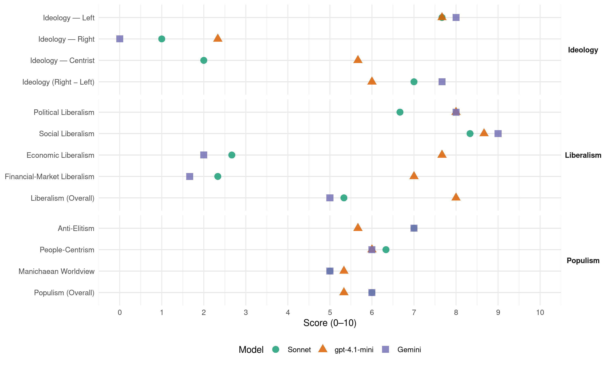

GPEW (United Kingdom, 2015)
manifesto_id 51110_201505
Get full text: This site shows derived annotations and short verbatim quotes only. The full manifesto text is © Manifesto Project / WZB — obtain it via manifesto-project.wzb.eu using the manifesto_id above.
Headline scores
| Dimension | Sonnet | gpt-4.1-mini | Gemini |
|---|---|---|---|
| Populism (Overall) | 6.0 | 5.3 | 6.0 |
| Anti-Elitism | 7.0 | 5.7 | 7.0 |
| People-Centrism | 6.3 | 6.0 | 6.0 |
| Manichaean Worldview | 5.0 | 5.3 | 5.0 |
| Ideology (Right − Left) | 7.0 | 6.0 | 7.7 |
| Liberalism (Overall) | 5.3 | 8.0 | 5.0 |
| Political Liberalism | 6.7 | 8.0 | 8.0 |
| Social Liberalism | 8.3 | 8.7 | 9.0 |
| Economic Liberalism | 2.7 | 7.7 | 2.0 |
| Financial-Market Liberalism | 2.3 | 7.0 | 1.7 |
Evidence per dimension
Economic Liberalism
Gemini · score 2.0 · verified · chunk 1
“Bring rail back into public ownership”
Make the highest wage in any organisation no more than ten times the lowest wage. Create jobs and help small business by reducing employers’ National Insurance. Bring rail back into public ownership.
Gemini · score 2.0 · verified · chunk 2
“Ending the marketisation and outsourcing of education”
Action to reduce teacher workload and introduce professional pay levels for all teachers. Ending the marketisation and outsourcing of education.
Gemini · score 2.0 · verified · chunk 3
“bringing rail services into public ownership and control”
The Green Party is committed to bringing rail services into public ownership and control.
gpt-4.1-mini · score 8.0 · verified · chunk 1
“Make tax fair and crack down vigorously on tax avoidance and evasion”
We believe that we can build a society that works for the common good – and that those with the broadest shoulders really should pay their fair share towards it.
gpt-4.1-mini · score 7.0 · verified · chunk 2
“Encourage small firms… Amend company law to ensure that medium and large companies take account of and report on the environmental and social impact”
We would: Encourage small firms, which are more embedded in their local communities… Amend company law to ensure that medium and large companies take account of and report on the environmental and social impact of their activities.
gpt-4.1-mini · score 8.0 · verified · chunk 3
“Promote fair trade, in particular seeking to ensure that workers in poor countries receive decent pay”
…Promote fair trade, in particular seeking to ensure that workers in poor countries receive decent pay and conditions within International Labour Organization (ILO) standards…
Sonnet · score 2.0 · verified · chunk 1
“Reject the dogma that everything is best done by the private sector”
Reject the dogma that everything is best done by the private sector. A sensible economy is a mixed economy, where some things – health, education and public transport – are better in community or public ownership
Sonnet · score 3.0 · verified · chunk 2
“Ending the marketisation and outsourcing of education”
Ending the marketisation and outsourcing of education. Leaving local education authorities free to decide how much to allocate to current spending and how much to capital projects.
Sonnet · score 3.0 · verified · chunk 3
“bringing rail services into public ownership and control”
The Green Party is committed to bringing rail services into public ownership and control. The current fragmented structure does not put the passenger
Financial-Market Liberalism
Gemini · score 2.0 · verified · chunk 1
“Stabilise and tightly regulate the financial sector”
Address the issue of climate change. We need huge investment in using energy more efficiently and generating energy sustainably. This will not happen without public investment. See Chapter 4 on Energy and Climate. Stabilise and tightly regulate the financial sector, whose greed and recklessness have been a major cause of our recent economic difficulties and of growing inequality.
Gemini · score 1.0 · verified · chunk 2
“The power to create money must be taken out of the hands of private banks”
Move towards creating all national currency through a national monetary authority, answerable to Parliament. The power to create money must be taken out of the hands of private banks.
Gemini · score 2.0 · verified · chunk 3
“regulation of banks and the financial industry”
Under TTIP: … regulation of banks and the financial industry would be harder, if not impossible.
gpt-4.1-mini · score 7.0 · verified · chunk 1
“Stabilise and tightly regulate the financial sector, whose greed and recklessness have been a major cause of our recent economic difficulties and of growing inequality”
We need to: Ensure that everyone who wants one has a decent secure job paid at least a living wage. So we have to encourage and create jobs. In total, the policies in this manifesto will create over 1 million jobs. See the section on Work in Chapter 9. Address the issue of climate change. We need huge investment in using energy more efficiently and generating energy sustainably. This will not happen without public investment. See Chapter 4 on Energy and Climate. Stabilise and tightly regulate the financial sector, whose greed and recklessness have been a major cause of our recent economic difficulties and of growing inequality. See the section on Finance in Chapter 9. Provide equality and security in a mixed economy by committing to the common good, a larger public sector and higher taxation, funding our health, education and local services properly, and creating hundreds of thousands of jobs. See the section on Taxes in Chapter 9.
gpt-4.1-mini · score 7.0 · verified · chunk 2
“Move towards creating all national currency through a national monetary authority, answerable to Parliament”
We would: Move towards creating all national currency through a national monetary authority, answerable to Parliament. The power to create money must be taken out of the hands of private banks.
gpt-4.1-mini · score 7.0 · verified · chunk 3
“Take real action to end tax evasion and avoidance and transfer mispricing by transnational corporations”
…We will: Take real action to end tax evasion and avoidance and transfer mispricing by transnational corporations, which steals resources especially from poorer countries. Support global efforts to develop a fairer global tax system…
Sonnet · score 2.0 · verified · chunk 1
“Stabilise and tightly regulate the financial sector”
Stabilise and tightly regulate the financial sector, whose greed and recklessness have been a major cause of our recent economic difficulties and of growing inequality
Sonnet · score 2.0 · verified · chunk 2
“power to create money must be taken out”
Move towards creating all national currency through a national monetary authority, answerable to Parliament. The power to create money must be taken out of the hands of private banks.
Sonnet · score 3.0 · verified · chunk 3
“Regulation of banks and the financial industry would be harder”
Under TTIP: Attempts to bring the National Health Service and the railways back into public ownership could be financially penalised or blocked… Regulation of banks and the financial industry would be harder, if not impossible
Political Liberalism
Gemini · score 8.0 · verified · chunk 1
“Bring in a fair voting system involving proportional representation”
Bring in a fair voting system involving proportional representation. Respect immigrants for the contribution they make and control immigration fairly.
Gemini · score 8.0 · verified · chunk 2
“proportional representation (PR) using the Additional Member System”
Bring in proportional representation (PR) using the Additional Member System for parliamentary elections and continue fixedterm Parliaments.
Gemini · score 8.0 · verified · chunk 3
“within the rule of law, with independent judicial approval”
Such specific surveillance should be proportionate, necessary, effective and within the rule of law, with independent judicial approval and genuine parliamentary oversight.
gpt-4.1-mini · score 8.0 · verified · chunk 1
“Bring in a fair voting system involving proportional representation”
Fund local government adequately and set democratically elected local authorities free to decide how to run education, public transport and other local services and to raise local taxes. Bring in a fair voting system involving proportional representation.
gpt-4.1-mini · score 8.0 · verified · chunk 2
“Move towards a written constitution with a Bill of Rights… Bring in proportional representation”
To put this right the Green Party will: Move towards a written constitution with a Bill of Rights. Bring in proportional representation (PR) using the Additional Member System for parliamentary elections and continue fixed-term Parliaments.
gpt-4.1-mini · score 8.0 · verified · chunk 3
“Support the recommendations of the Leveson Inquiry into press ethics and for the cross-party Royal Charter”
…Support the recommendations of the Leveson Inquiry into press ethics and for the cross-party Royal Charter. But if this is not supported by all the major newspapers we will support legislation to implement the Leveson system of independent press self-regulation…
Sonnet · score 5.0 · verified · chunk 1
“Bring in a fair voting system involving proportional representation”
Bring in a fair voting system involving proportional representation. Respect immigrants for the contribution they make and control immigration fairly.
Sonnet · score 7.0 · verified · chunk 2
“proportional representation (PR) using the Additional Member System”
Bring in proportional representation (PR) using the Additional Member System for parliamentary elections and continue fixed-term Parliaments.
Sonnet · score 8.0 · verified · chunk 3
“independent judicial approval and genuine parliamentary oversight”
Such specific surveillance should be proportionate, necessary, effective and within the rule of law, with independent judicial approval and genuine parliamentary oversight
Liberalism (Overall)
Gemini · score 5.0 · verified · chunk 1
“Bring in a fair voting system involving proportional representation”
Bring in a fair voting system involving proportional representation. Respect immigrants for the contribution they make and control immigration fairly.
Gemini · score 5.0 · verified · chunk 2
“keeping the Human Rights Act and retaining the UK’s membership”
Retain the principle that human rights are the common property of the whole world by keeping the Human Rights Act and retaining the UK’s membership of the European Convention
Gemini · score 5.0 · verified · chunk 3
“within the rule of law, with independent judicial approval”
Such specific surveillance should be proportionate, necessary, effective and within the rule of law, with independent judicial approval and genuine parliamentary oversight.
gpt-4.1-mini · score 8.0 · verified · chunk 1
“Make tax fair and crack down vigorously on tax avoidance and evasion”
We believe that we can build a society that works for the common good – and that those with the broadest shoulders really should pay their fair share towards it.
gpt-4.1-mini · score 8.0 · verified · chunk 2
“Move towards a written constitution with a Bill of Rights… Encourage small firms… Move towards creating all national currency through a national monetary authority”
To put this right the Green Party will: Move towards a written constitution with a Bill of Rights… Encourage small firms… We would: Move towards creating all national currency through a national monetary authority, answerable to Parliament.
gpt-4.1-mini · score 8.0 · verified · chunk 3
“Support the recommendations of the Leveson Inquiry into press ethics and for the cross-party Royal Charter”
…Support the recommendations of the Leveson Inquiry into press ethics and for the cross-party Royal Charter. But if this is not supported by all the major newspapers we will support legislation to implement the Leveson system of independent press self-regulation…
Sonnet · score 5.0 · verified · chunk 1
“democratically managed economy that operates within the Earth’s resource limits”
The solution lies in a democratically managed economy that operates within the Earth’s resource limits. We don’t want a privatised outsourced state, we want a green and democratic one
Sonnet · score 5.0 · verified · chunk 2
“Move towards a written constitution with a Bill of Rights”
To put this right the Green Party will: Move towards a written constitution with a Bill of Rights.
Sonnet · score 6.0 · verified · chunk 3
“rule of law, with independent judicial approval”
within the rule of law, with independent judicial approval and genuine parliamentary oversight
Anti-Elitism
Gemini · score 8.0 · verified · chunk 1
“dominated by a small social group and the power of vested interests”
Sadly, our current politics – dominated by a small social group and the power of vested interests - are failing to realise this potential.
Gemini · score 7.0 · verified · chunk 2
“corporate interests, heading a coalition of the rich and powerful”
Government has been put out to tender. Corporate interests, heading a coalition of the rich and powerful, have ruled the roost for too long.
Gemini · score 6.0 · verified · chunk 3
“submit democratically elected governments to the will of private corporations”
TTIP is globalisation in its worst form, designed to submit democratically elected governments to the will of private corporations.
gpt-4.1-mini · score 8.0 · verified · chunk 1
“politics – dominated by a small social group and the power of vested interests”
Sadly, our current politics – dominated by a small social group and the power of vested interests - are failing to realise this potential.
gpt-4.1-mini · score 6.0 · verified · chunk 2
“Corporate interests, heading a coalition of the rich and powerful, have ruled the roost for too long”
Government has been put out to tender. Corporate interests, heading a coalition of the rich and powerful, have ruled the roost for too long. This has brought politics and politicians into disrepute.
gpt-4.1-mini · score 3.0 · verified · chunk 3
“The Green Party opposes the Transatlantic Trade and Investment Partnership (TTIP)”
…The Green Party opposes the Transatlantic Trade and Investment Partnership (TTIP) TTIP is globalisation in its worst form, designed to submit democratically elected governments to the will of private corporations. Companies will be able to take legal action against governments that they think threaten their profits…
Sonnet · score 8.0 · verified · chunk 1
“dominated by a small social group and the power of vested interests”
our current politics – dominated by a small social group and the power of vested interests - are failing to realise this potential
Sonnet · score 7.0 · verified · chunk 2
“Corporate interests, heading a coalition of the rich and powerful”
This has brought politics and politicians into disrepute. Corporate interests, heading a coalition of the rich and powerful, have ruled the roost for too long.
Sonnet · score 6.0 · verified · chunk 3
“privatised railway ’is a blatant transfer of public money to private interests”
As Caroline says, a privatised railway ‘is a blatant transfer of public money to private interests at the expense of the taxpayer and rail passengers’
Ideology — Centrist
gpt-4.1-mini · score 6.0 · verified · chunk 1
“Imagine a government that believes in the common good, and that the best way of achieving it is by working for each other”
Imagine a government that believes in society, in our common humanity, in a culture of hope, and in our capacity to govern ourselves. Imagine a government that believes in the common good, and that the best way of achieving it is by working for each other, rather than against each other.
gpt-4.1-mini · score 6.0 · verified · chunk 2
“Imagine being part of another kind of coalition… determined to govern for the common good”
Imagine being part of another kind of coalition. Not the grubby one that’s handed democracy over to the private sector, but one made up of elected politicians determined to govern for the common good, a revitalised local government, a regulated private sector, the third sector and non-profits – and you and me.
gpt-4.1-mini · score 5.0 · verified · chunk 3
“We believe that the people of Wales should enjoy the degree of autonomy”
…We believe that the people of Wales should enjoy the degree of autonomy, perhaps including full self-government or independence, that they wish to have, as expressed in a referendum…
Sonnet · score 2.0 · verified · chunk 1
“Green policies consistently come out on top”
When asked to vote for policies rather than parties or personalities, Green policies consistently come out on top
Sonnet · score 2.0 · verified · chunk 2
“putting politics back in the hands of the people”
The Green Party will lead a revolution in standards, putting politics back in the hands of the people and governing for the common good.
Sonnet · score 2.0 · verified · chunk 3
“generic people-elite appeals without clear programmatic”
context not applicable — using verified left-populist framing rather than centrist catch-all appeals
Ideology — Left
Gemini · score 8.0 · verified · chunk 1
“consumer capitalism is the problem, not the solution”
And in this remaking we need finally to realise that consumer capitalism is the problem, not the solution.
Gemini · score 8.0 · verified · chunk 2
“tax for fairness and to redistribute income and wealth”
That’s the Green Party’s tax policy in a nutshell: tax for fairness and to redistribute income and wealth, and tax for sustainability.
Gemini · score 8.0 · verified · chunk 3
“blatant transfer of public money to private interests”
As Caroline says, a privatised railway ‘is a blatant transfer of public money to private interests at the expense of the taxpayer and rail passengers’.
gpt-4.1-mini · score 9.0 · verified · chunk 1
“Make tax fair and crack down vigorously on tax avoidance and evasion”
We believe that we can build a society that works for the common good – and that those with the broadest shoulders really should pay their fair share towards it.
gpt-4.1-mini · score 7.0 · verified · chunk 2
“Increase the minimum wage so that it is a living wage… Revive the role of democratic trade unions”
We will: Increase the minimum wage so that it is a living wage. We propose a minimum wage target for everyone who is working in the UK of £10 per hour by 2020… Revive the role of democratic trade unions, including the right to belong to a union and have the employer recognise it, and the right to take industrial action, including strikes and peaceful picketing.
gpt-4.1-mini · score 7.0 · verified · chunk 3
“Fight for the writing-off of international debts for the poorest countries”
…We will: Fight for the writing-off of international debts for the poorest countries and limiting repayments for other low-income countries, to ensure they can fund decent public services for their people…
Sonnet · score 8.0 · verified · chunk 1
“consumer capitalism is the problem, not the solution”
we need finally to realise that consumer capitalism is the problem, not the solution. The solution lies in a democratically managed economy
Sonnet · score 8.0 · verified · chunk 2
“Introduce a maximum pay ratio of 10:1”
Introduce a maximum pay ratio of 10:1 between the best paid and the worst paid in every organisation.
Sonnet · score 7.0 · verified · chunk 3
“bringing rail services into public ownership and control”
The Green Party is committed to bringing rail services into public ownership and control. The current fragmented structure does not put the passenger
Ideology (Right − Left)
Gemini · score 8.0 · verified · chunk 1
“consumer capitalism is the problem, not the solution”
And in this remaking we need finally to realise that consumer capitalism is the problem, not the solution.
Gemini · score 8.0 · verified · chunk 2
“tax for fairness and to redistribute income and wealth”
That’s the Green Party’s tax policy in a nutshell: tax for fairness and to redistribute income and wealth, and tax for sustainability.
Gemini · score 7.0 · verified · chunk 3
“blatant transfer of public money to private interests”
As Caroline says, a privatised railway ‘is a blatant transfer of public money to private interests at the expense of the taxpayer and rail passengers’.
gpt-4.1-mini · score 7.0 · verified · chunk 1
“Private interests have ruled the roost for far too long”
Private interests have ruled the roost for far too long. The result is a society scarred by inequalities of power and wealth, and a planet plundered of resources and damaged by pollution.
gpt-4.1-mini · score 6.0 · verified · chunk 2
“Corporate interests, heading a coalition of the rich and powerful, have ruled the roost for too long”
Government has been put out to tender. Corporate interests, heading a coalition of the rich and powerful, have ruled the roost for too long. This has brought politics and politicians into disrepute.
gpt-4.1-mini · score 5.0 · verified · chunk 3
“The Green Party opposes the Transatlantic Trade and Investment Partnership (TTIP)”
…The Green Party opposes the Transatlantic Trade and Investment Partnership (TTIP) TTIP is globalisation in its worst form, designed to submit democratically elected governments to the will of private corporations…
Sonnet · score 8.0 · verified · chunk 1
“anti-corporate elite, redistribution, social equality”
consumer capitalism is the problem, not the solution. The solution lies in a democratically managed economy that operates within the Earth’s resource limits
Sonnet · score 7.0 · verified · chunk 2
“anti-corporate elite, redistribution”
The only people to benefit from the current system are university Vice-Chancellors and senior bureaucrats, who award themselves massive pay rises
Sonnet · score 6.0 · verified · chunk 3
“anti-corporate elite, redistribution, social equality”
context not applicable — overall left-populist ideology evidenced by public ownership, anti-TTIP, redistribution and anti-corporate framing throughout
Ideology — Right
Gemini · score 0.0 · verified · chunk 1
“Respect immigrants for the contribution they make”
Bring in a fair voting system involving proportional representation. Respect immigrants for the contribution they make and control immigration fairly.
Gemini · score 0.0 · verified · chunk 2
“refugees, the LGBTIQ communities and ex-service people”
pregnancy, children and adolescents, Black and Minority Ethnic people, refugees, the LGBTIQ communities and ex-service people and their families.
Gemini · score 0.0 · verified · chunk 3
“wrong to scapegoat immigrants for problems”
But it is wrong to scapegoat immigrants for problems with housing, education, health or local authority services.
gpt-4.1-mini · score 2.0 · verified · chunk 1
“Respect immigrants for the contribution they make and control immigration fairly”
Fund local government adequately and set democratically elected local authorities free to decide how to run education, public transport and other local services and to raise local taxes. Bring in a fair voting system involving proportional representation. Respect immigrants for the contribution they make and control immigration fairly.
gpt-4.1-mini · score 3.0 · verified · chunk 2
“Oppose new arm’s length management organisations and ensure genuine tenant participation”
Provide more rights for homeless people… Oppose new arm’s length management organisations and ensure genuine tenant participation in existing ones.
gpt-4.1-mini · score 2.0 · verified · chunk 3
“We reject an open borders approach. We also reject the imposition of an arbitrary numerical cap on net migration”
…We accept that these policies will take time to work and that we must address immigration as it is here and now. Some controls on immigration will be needed for the foreseeable future; for now, we reject an open borders approach…
Sonnet · score 1.0 · verified · chunk 1
“Respect immigrants for the contribution they make”
Respect immigrants for the contribution they make and control immigration fairly.
Sonnet · score 1.0 · verified · chunk 2
“Put the UK at the centre”
Put the UK at the centre of efforts to end the AIDS, TB and malaria epidemics and the threat they pose to the health of women, men and children living in poverty.
Sonnet · score 1.0 · verified · chunk 3
“Some controls on immigration will be needed”
We accept that these policies will take time to work… Some controls on immigration will be needed for the foreseeable future; for now, we reject an open borders approach
Manichaean Worldview
Gemini · score 6.0 · verified · chunk 1
“the rich and powerful have forced us to live in their fantasy world”
For 40 years the rich and powerful have forced us to live in their fantasy world – a world that suits the minority not the majority.
Gemini · score 5.0 · verified · chunk 2
“more for the rich, less for the poor”
Now we know what this means: more for the rich, less for the poor. There are three reasons for a fundamental shift
Gemini · score 4.0 · verified · chunk 3
“blatant transfer of public money to private interests”
As Caroline says, a privatised railway ‘is a blatant transfer of public money to private interests at the expense of the taxpayer and rail passengers’.
gpt-4.1-mini · score 7.0 · verified · chunk 1
“Private interests have ruled the roost for far too long”
Private interests have ruled the roost for far too long. The result is a society scarred by inequalities of power and wealth, and a planet plundered of resources and damaged by pollution.
gpt-4.1-mini · score 5.0 · verified · chunk 2
“End of cronyism, corruption and the ‘Westminster bubble’”
Imagine the end of cronyism, corruption and the ‘Westminster bubble’. Imagine Parliament belonging to the people… Who governs? We elect politicians to govern in our name, not to hand power over to huge corporations acting in shareholder interest.
gpt-4.1-mini · score 4.0 · verified · chunk 3
“The UK’s recent history has been scarred by involvement in ill-advised military interventions”
…The UK’s recent history has been scarred by involvement in ill-advised military interventions that have undermined our national and international security. The Green Party opposed these interventions…
Sonnet · score 6.0 · verified · chunk 1
“rich and powerful have forced us to live in their fantasy world”
For 40 years the rich and powerful have forced us to live in their fantasy world – a world that suits the minority not the majority
Sonnet · score 5.0 · verified · chunk 2
“society is divided into strivers and scroungers”
It’s to experience discrimination, as society is divided into strivers and scroungers, the deserving and the undeserving poor, taxpayers and those on benefits
Sonnet · score 4.0 · verified · chunk 3
“submit democratically elected governments to the will of private corporations”
TTIP is globalisation in its worst form, designed to submit democratically elected governments to the will of private corporations
People-Centrism
Gemini · score 7.0 · verified · chunk 1
“an economy that works for people and planet”
Imagine a world of efficient and welcoming public services, coordinated action on climate change, equality, workers’ rights, an economy that works for people and planet at a human scale
Gemini · score 6.0 · verified · chunk 2
“Imagine Parliament belonging to the people”
Imagine the end of cronyism, corruption and the ‘Westminster bubble’. Imagine Parliament belonging to the people… Who governs?
Gemini · score 5.0 · verified · chunk 3
“making them belong to you and me”
putting this plan into action for the common good means bringing the railways back into public ownership – making them belong to you and me, run by rail workers
gpt-4.1-mini · score 7.0 · verified · chunk 1
“the common good embraces other species and not just our own”
That’s what a real political party, the Green Party, does. The Earth is our home, and this is what we are doing to it: We have lost half the wild animals on Earth in the past 40 years.
gpt-4.1-mini · score 5.0 · verified · chunk 2
“Imagine being part of another kind of coalition… determined to govern for the common good”
Imagine being part of another kind of coalition. Not the grubby one that’s handed democracy over to the private sector, but one made up of elected politicians determined to govern for the common good, a revitalised local government, a regulated private sector, the third sector and non-profits – and you and me.
gpt-4.1-mini · score 6.0 · verified · chunk 3
“We believe that the people of Wales should enjoy the degree of autonomy”
…We believe that the people of Wales should enjoy the degree of autonomy, perhaps including full self-government or independence, that they wish to have, as expressed in a referendum…
Sonnet · score 7.0 · verified · chunk 1
“build a society that works for the common good”
We believe that we can build a society that works for the common good – and that those with the broadest shoulders really should pay their fair share
Sonnet · score 6.0 · verified · chunk 2
“governing for the common good”
The Green Party will lead a revolution in standards, putting politics back in the hands of the people and governing for the common good.
Sonnet · score 6.0 · verified · chunk 3
“bringing the railways back into public ownership”
Putting this plan into action for the common good means bringing the railways back into public ownership – making them belong to you and me, run by rail workers for passengers
Populism (Overall)
Gemini · score 7.0 · verified · chunk 1
“dominated by a small social group and the power of vested interests”
Sadly, our current politics – dominated by a small social group and the power of vested interests - are failing to realise this potential.
Gemini · score 6.0 · verified · chunk 2
“corporate interests, heading a coalition of the rich and powerful”
Government has been put out to tender. Corporate interests, heading a coalition of the rich and powerful, have ruled the roost for too long.
Gemini · score 5.0 · verified · chunk 3
“submit democratically elected governments to the will of private corporations”
TTIP is globalisation in its worst form, designed to submit democratically elected governments to the will of private corporations.
gpt-4.1-mini · score 7.0 · verified · chunk 1
“Private interests have ruled the roost for far too long”
Private interests have ruled the roost for far too long. The result is a society scarred by inequalities of power and wealth, and a planet plundered of resources and damaged by pollution.
gpt-4.1-mini · score 5.0 · verified · chunk 2
“Corporate interests, heading a coalition of the rich and powerful, have ruled the roost for too long”
Government has been put out to tender. Corporate interests, heading a coalition of the rich and powerful, have ruled the roost for too long. This has brought politics and politicians into disrepute.
gpt-4.1-mini · score 4.0 · verified · chunk 3
“The Green Party opposes the Transatlantic Trade and Investment Partnership (TTIP)”
…The Green Party opposes the Transatlantic Trade and Investment Partnership (TTIP) TTIP is globalisation in its worst form, designed to submit democratically elected governments to the will of private corporations…
Sonnet · score 7.0 · verified · chunk 1
“Private interests have ruled the roost for far too long”
Private interests have ruled the roost for far too long. The result is a society scarred by inequalities of power and wealth
Sonnet · score 6.0 · verified · chunk 2
“power back to the people”
We need to improve the way the UK is governed, passing power back to the people, back to where they live and work.
Sonnet · score 5.0 · verified · chunk 3
“transfer of public money to private interests”
a privatised railway ‘is a blatant transfer of public money to private interests at the expense of the taxpayer and rail passengers’
Social Liberalism